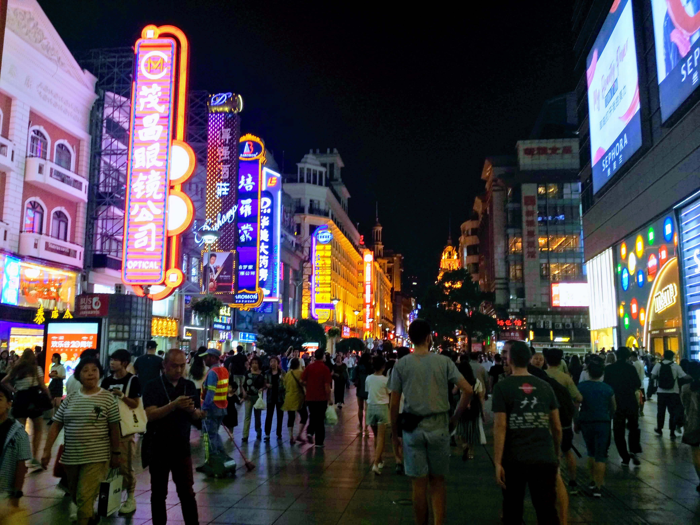
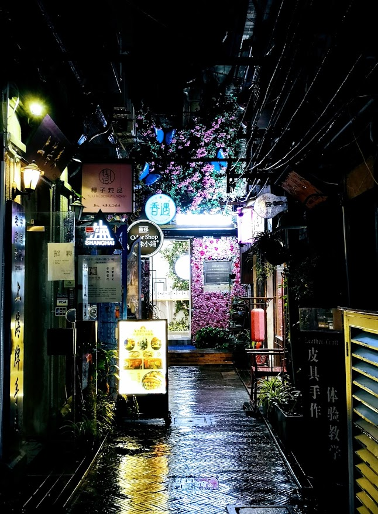
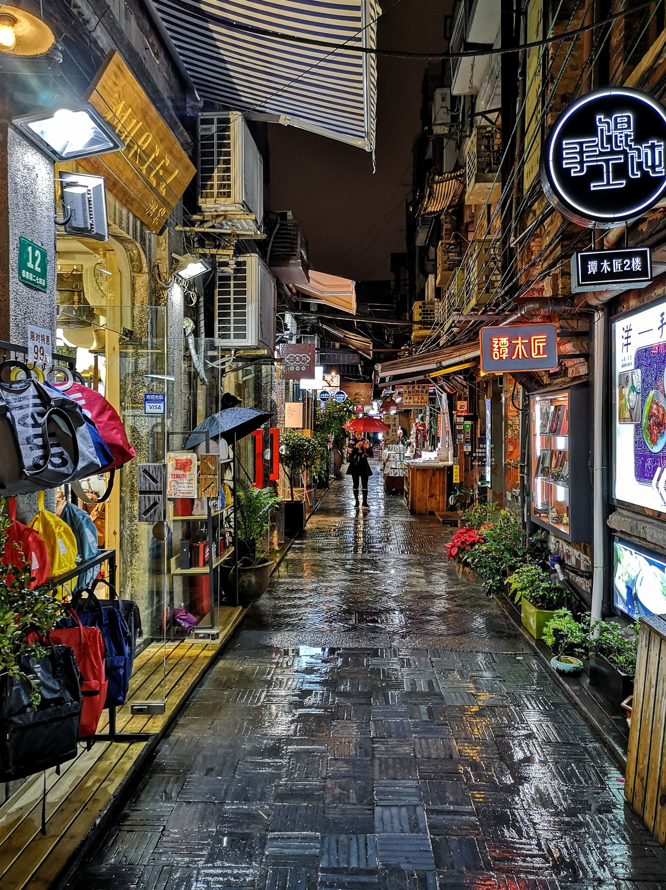
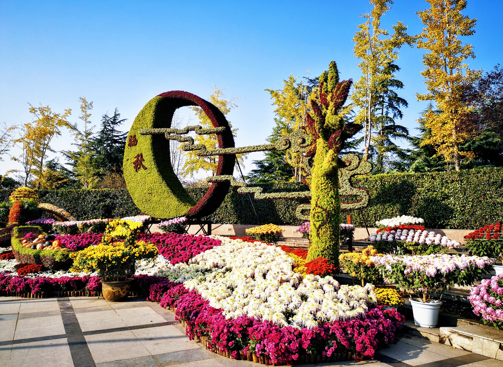
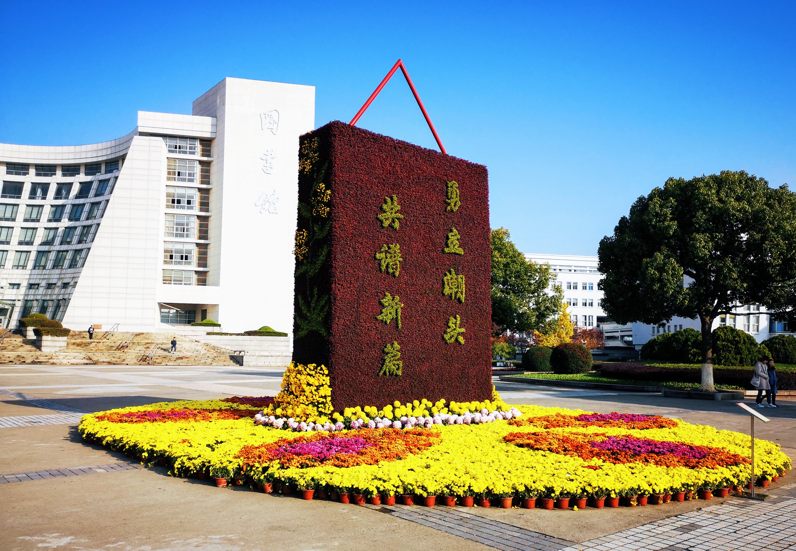
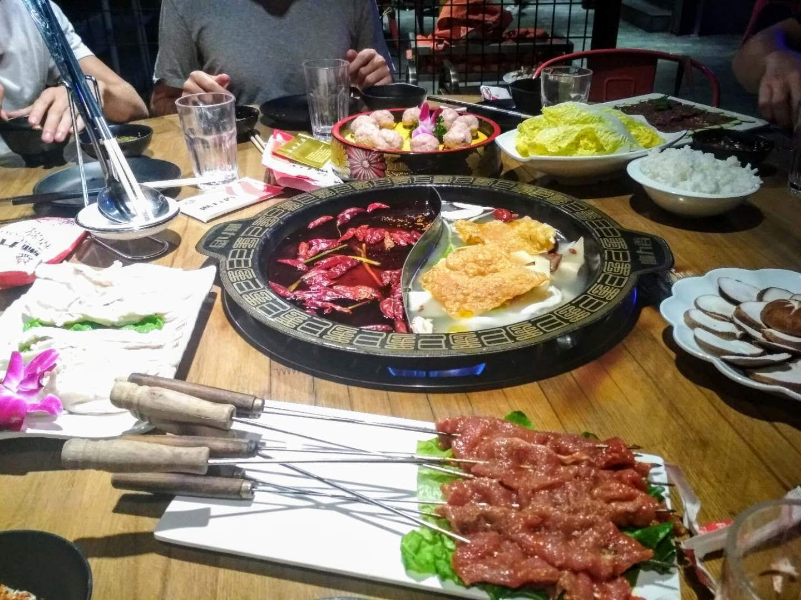
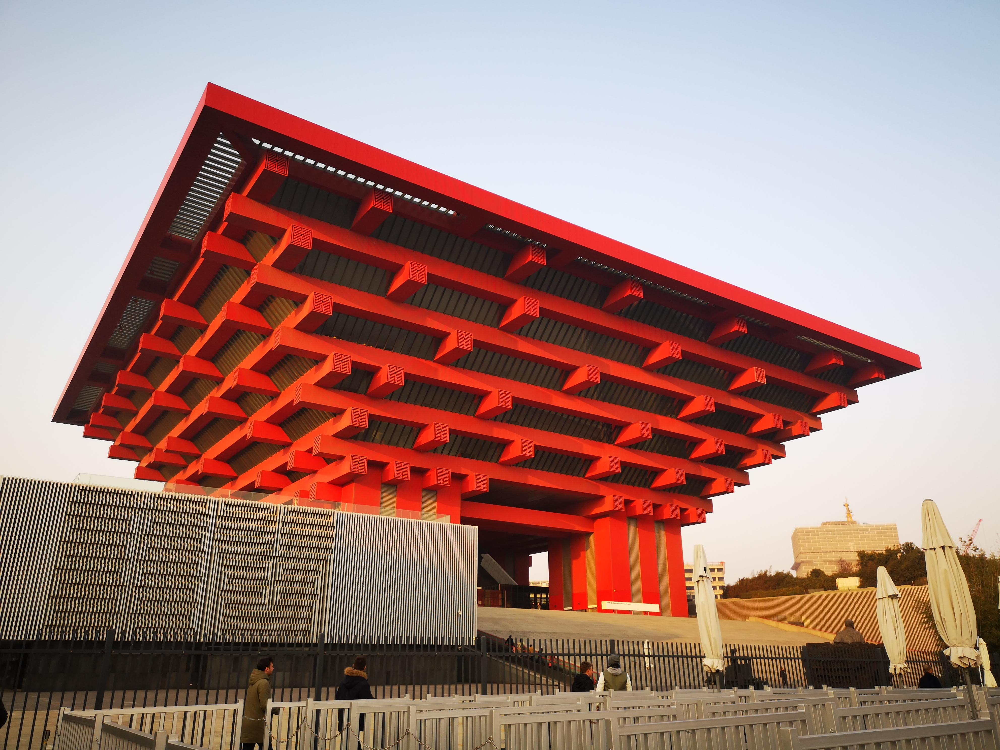
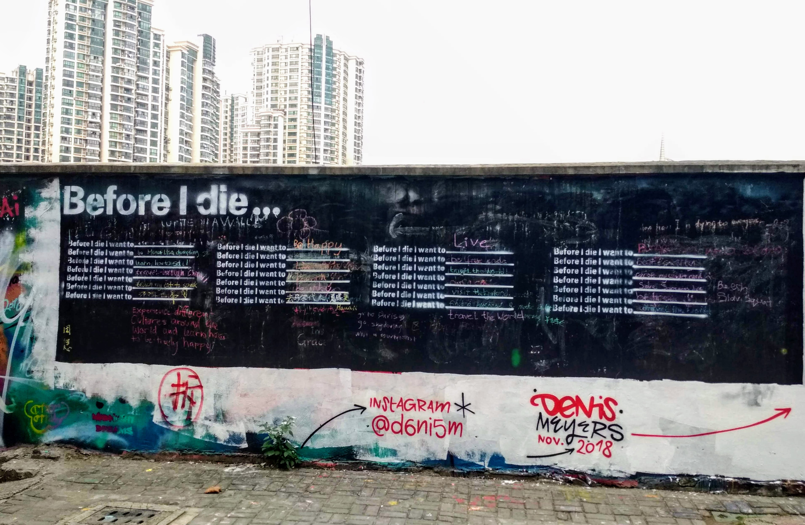

Shanghai, sur la mer 上海
Une des plus grandes villes du monde qui a été ma maison pendant 5 mois. Shanghai fait approximativement la taille de la belgique et est remplie de petites de perles à découvrir.

La découverte du Bund est quelque chose d'exceptionnel, c'est d'ailleurs le symbole de Shanghai. Le meilleur moment pour le contempler est du couché du soleil à 22h (l'heure à laquelle les lumières s'éteignent). Il faut bien entendu faire abstraction de la foule qui est là tout les soir pour admirer la vue.



L'endroit parfait pour flaner et passer le temps. L'endroit est rempli de petites boutiques de souvenirs, de thé ou de nourriture. Il y a bien évidemment des restaurants et des bars qui servent de la nourriture chinoise ou occidentale. Les prix sont un peu plus élevés mais le cadre est très joli.



Repas typique chinois, les aliments sont cuits bouillis dans l'eau chaude. Cette dernière est aromatisée, la plupart du temps avec des piments ou des champignons. C'est un plat convivial, comme la raclette chez nous, où les convives cuisent leur nourriture et la partage.


C'est un endroit qui vaut vraiment le coup. Il y a des oeuvres interactives avec le public avec des néons, des capteurs... très contemporains. On peut lire un étonnant "Before I die I want to be Mona Lisa Dumpling" que je n'ai pas réussi à m'expliquer et un beau "Before I die I want to Live"